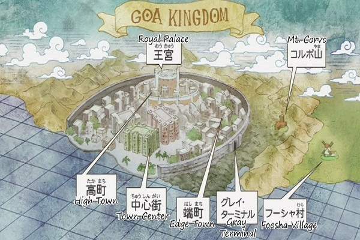
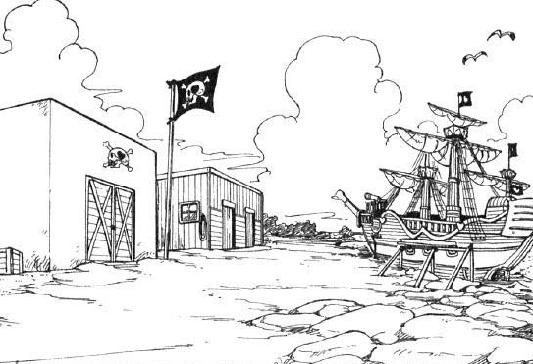
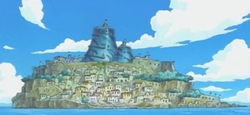
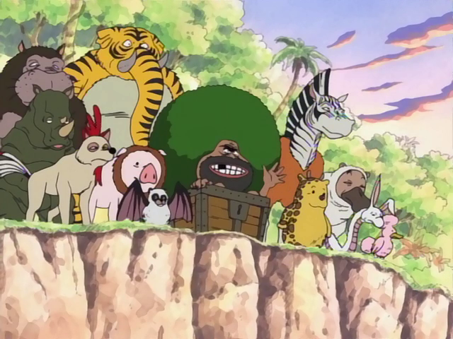
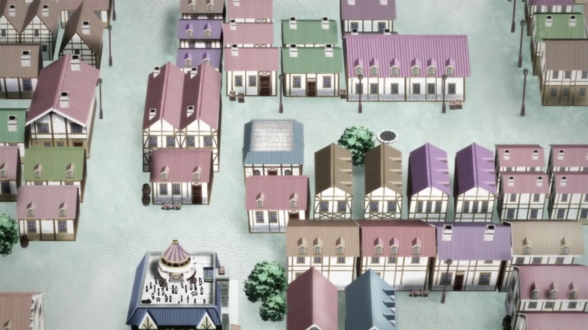
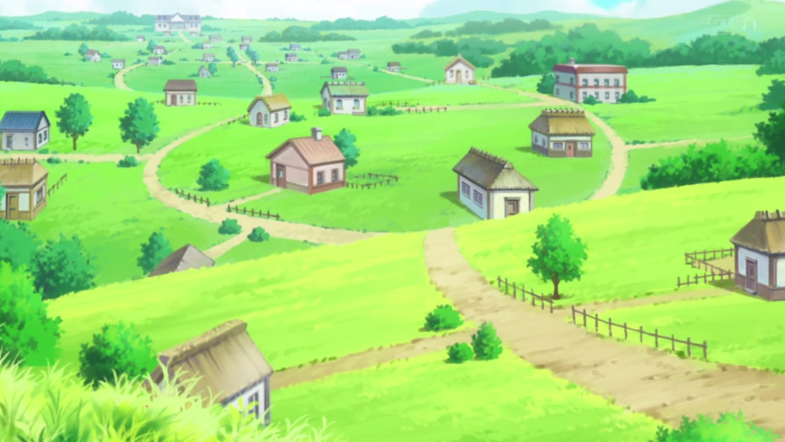
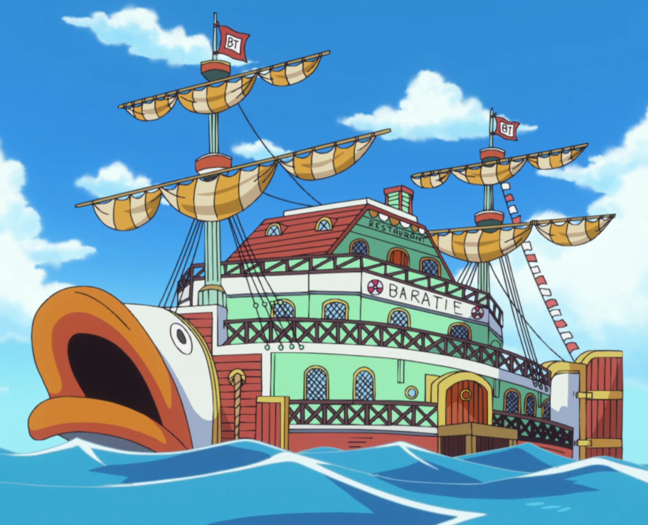
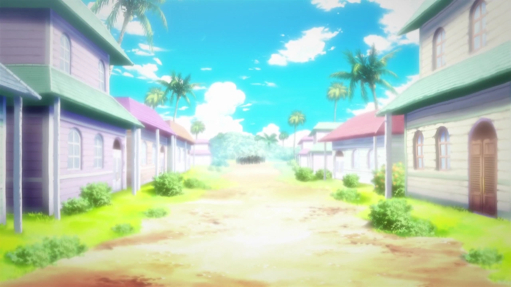
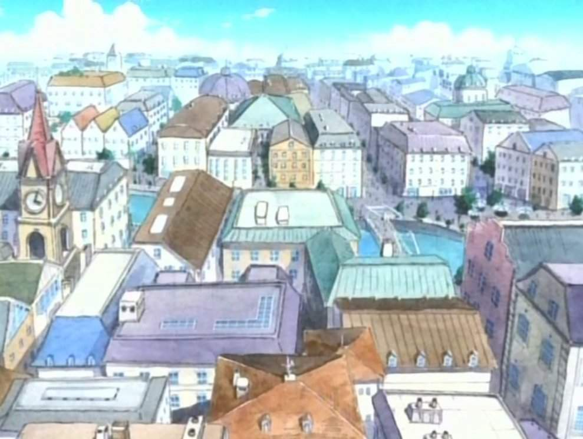

#1 Isla de Dawn
Región: East Blue Afiliaciones: Reino de Goa. Lugares destacados: Reino de Goa, Villa Foosha, Monte Colubo, Gray Terminal, Flora y fauna.
#2 Isla Goat
Isla de Goa Región: East Blue Afiliaciones: Reino de Goa Lugares destacados: Reino de Goa: Capital con niveles sociales y residencia de la realeza. Gray Terminal: Vertedero lleno de basura y tierra.
#3 Isla Yotsuba → Shell Town
Otra información relevante sobre este punto.
#4 Isla de los animales raros
Otra información relevante sobre este punto.
#5 Islas Organ → Orange Town
Otra información relevante sobre este punto.
#6 Islas Gecko → Syrup
Otra información relevante sobre este punto.
#7 Región de Sambas → Baratie
Otra información relevante sobre este punto.
#8 Islas Conomi → Kokoyashi
Otra información relevante sobre este punto.
#9 Archipiélago Polestar → Loguetown
Otra información relevante sobre este punto.
#10 Reverse Mountain → Laboon
Otra información relevante sobre este punto.

#11 Cactus Island → Whiskey peak
Otra información relevante sobre este punto.

#12 Grand line → Little garden
Otra información relevante sobre este punto.

#13 Drum kingdom → Sakura island
Otra información relevante sobre este punto.

#14 Alabasta kingdom → Alabasta
Otra información relevante sobre este punto.

#15 Jaya island → Jaya
Otra información relevante sobre este punto.

#16 Sky island → Skypiea
Otra información relevante sobre este punto.

#17 Long Ring Long Land → Foxy games
Otra información relevante sobre este punto.